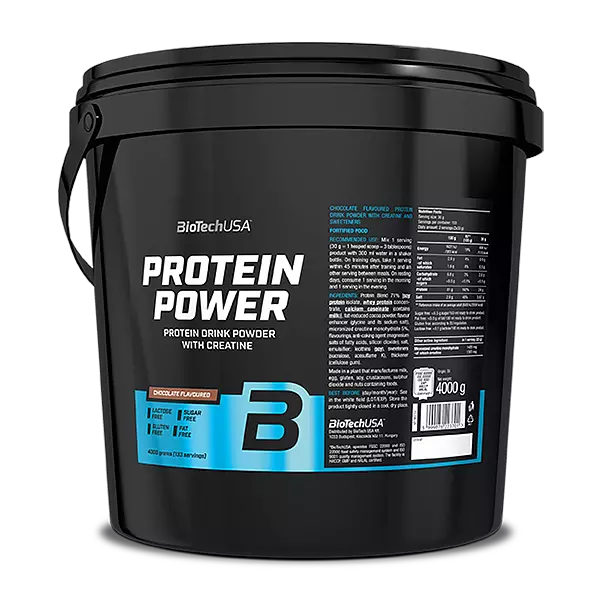
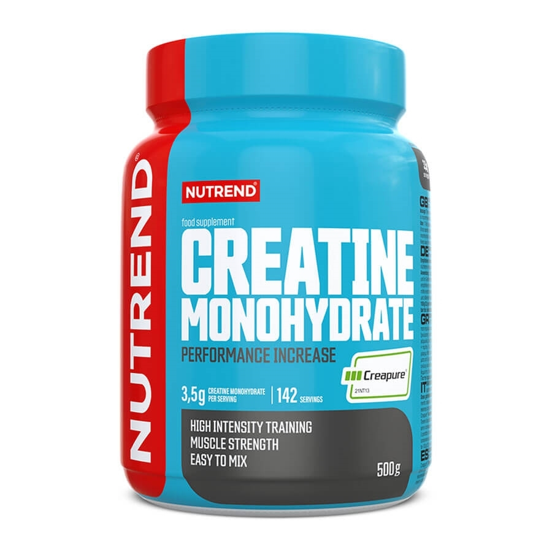
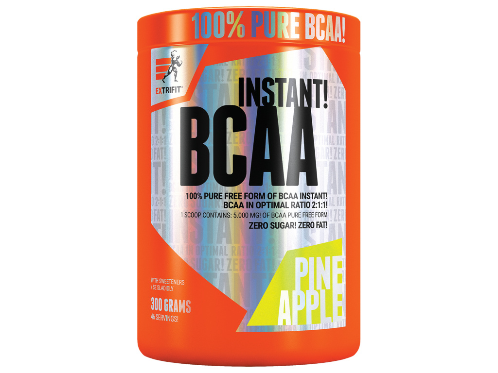
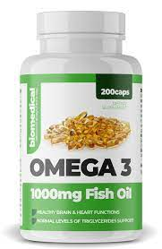

Here you will find supplements recomended by many weight lifters.
5 recommended supplements.
Protein Powder: Dosage can vary based on individual protein needs and dietary intake. A common recommendation is to consume 20-30 grams of protein powder per serving, usually mixed with water or a beverage of your choice. Usually its best to take 1-2 per kilo of bodyweight.

Creatine: A common dosage for creatine is 3-5 grams per day. This amount can be taken all at once or divided into multiple smaller doses throughout the day. It's often recommended to start with a loading phase of 20-25 grams per day for the first 5-7 days, followed by a maintenance dose of 3-5 grams per day.

Branched-Chain Amino Acids (BCAAs): A typical recommended dosage is 5-10 grams of BCAAs before, during, or after workouts. This dosage can be adjusted based on individual needs and goals.

Omega-3 Fatty Acids: The dosage of omega-3 fatty acids can vary depending on the specific product and concentration. A common recommendation is to aim for 1,000-2,000 milligrams (1-2 grams) of combined EPA and DHA per day.

Vitamin D: The recommended daily dosage of vitamin D can vary depending on individual needs and existing vitamin D levels. A common dosage range is 1,000-4,000 international units (IU) per day. However, it's best to have your vitamin D levels tested and consult with a healthcare professional to determine the appropriate dosage for you.